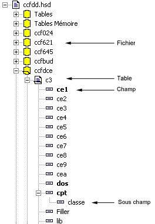

Nous avons vu que les objets du dictionnaire sont structurés de manière arborescente.
Au sommet de la hiérarchie se trouvent les fichiers.
Les fichiers contiennent des tables, et les tables contiennent les champs.
Mais la hiérarchie ne s'arrête pas forcément là car un champ peut encore être découpé en sous-champs (par exemple, une date peut se décomposer en année, mois, jour), et ainsi de suite.
Exemple

Remarque
Il y a deux manières d’éditer un dictionnaire :
par fichiers / tables / champs comme indiqué ci-dessus
par fichiers / tables / index pour définir les index.
Voir également :